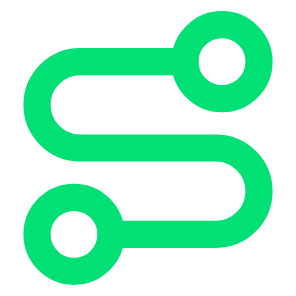
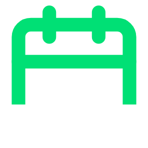

Proposed Next Steps
01
Pilot the
Start Group
Launch with a self-scaling license. On-site instructor training support from the Eduface team at pilot start. Target launch December 2026.

02
Programmatic
Expansion
Roll out to additional program(s) following pilot success.

03
Full Institutional
Integration
Roll out institution-wide from next academic year.
Concept, for discussion.
16